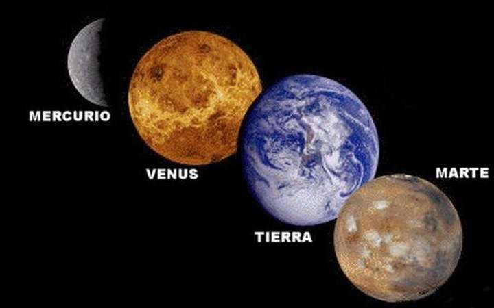
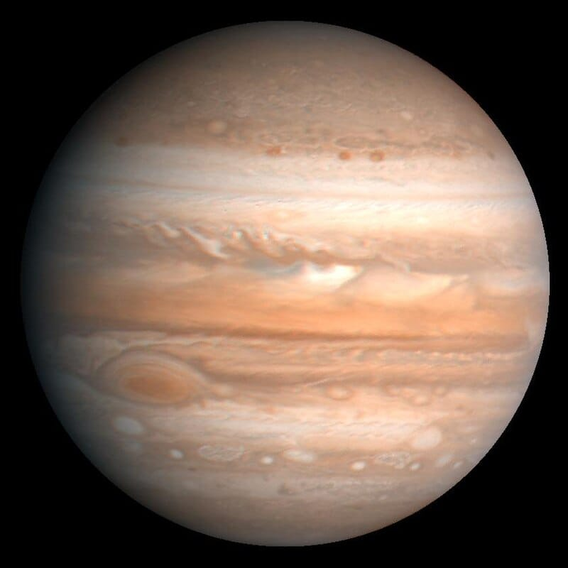
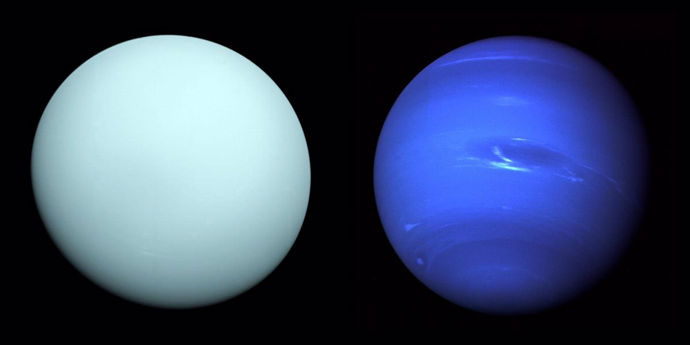
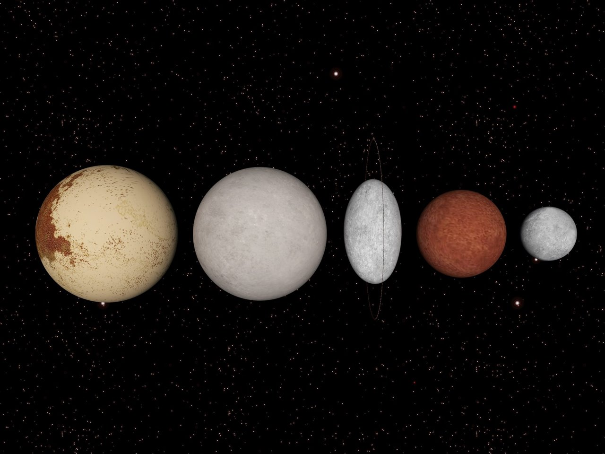

En nuestro sistema solar y más allá, existen varios tipos de planetas. Se pueden clasificar según su composición, tamaño y posición respecto a su estrella.
Tipos de planetas:
Planetas rocosos (terrestres):

-Composición sólida y rocosa.
-Superficie definida.
Ejemplos: Mercurio, Venus, Tierra, Marte.
Planetas gigantes gaseosos:

-Compuestos en su mayoría por hidrógeno y helio.
-No tienen una superficie sólida definida.
Ejemplos: Júpiter y Saturno.
Planetas gigantes helados (o “gigantes de hielo”):

-Compuestos por agua, amoníaco y metano en forma de hielo.
-Más fríos que los gigantes gaseosos.
Ejemplos: Urano y Neptuno.
¿Qué es un planeta enano?

Un planeta enano comparte muchas características con los planetas normales, pero tiene una diferencia crucial:
-No ha limpiado su órbita de otros objetos.
-Tiene forma esférica y orbita al Sol.
Ejemplos: Plutón, Eris, Haumea, Makemake, Ceres.
Dato curioso:
Plutón fue considerado el noveno planeta hasta 2006, cuando la Unión Astronómica Internacional lo reclasificó como planeta enano.
¡Y desde entonces sigue siendo tema de debate entre astrónomos y fanáticos del espacio!